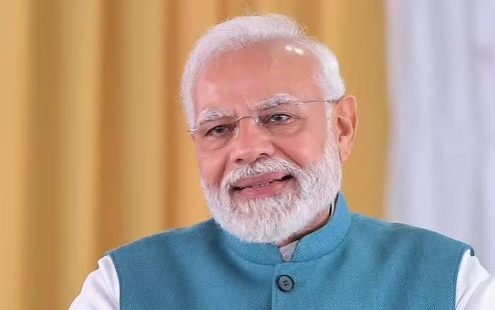

"History" was scripted in the forecourt of Rashtrapati Bhawan on the evening of 26th May 2014 as Narendra Modi took oath as the Prime Minister of India after a historic mandate from the people of India. In Narendra Modi, the people of India see a dynamic, decisive and development-oriented leader who has emerged as a ray of hope for the dreams and aspirations of a billion Indians. His focus on development, eye for detail and efforts to bring a qualitative difference in the lives of the poorest of the poor have made Narendra Modi a popular and respected leader across the length and breadth of India. Narendra Modi’s life has been a journey of courage, compassion and constant hardwork. At a very young age he had decided to devote his life in service of the people. He displayed his skills as a grass root level worker, an organiser and an administrator during his 13 year long stint as the Chief Minister of his home state of Gujarat, where he ushered a paradigm shift towards pro-people and pro-active good governance.